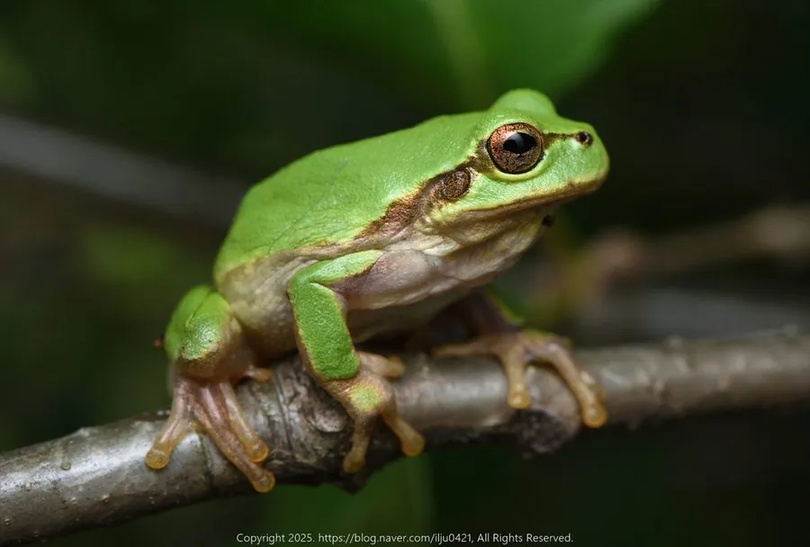

两栖动物 · 动物界
日本雨蛙 Hyla japonica

东亚常见的小型绿色树蛙，趾端有吸盘，能爬上草叶和玻璃，雨后雄蛙齐声鸣叫，是夏夜熟悉的声音。
- 分类
- 门脊索动物门纲两栖纲目无尾目科雨蛙科属雨蛙属
- 栖息环境
- 水田、池塘、沼泽、沟渠及附近草丛
- 地理分布
- 日本、朝鲜半岛和中国东北、华北等地
- 保护级别
- IUCN 无危（LC）；中国“三有”保护动物
物种志
日本雨蛙体长 3–4.5 厘米，雌蛙略大。体背光滑，呈鲜绿色或黄绿色，体侧有一条深色纵纹，腹部白色；四肢细长，趾端有圆形吸盘，指间有少量蹼，能吸附在叶片、树干和光滑表面上。
它分布于日本、朝鲜半岛和中国东北、华北等地，栖息于水田、池塘、沼泽和草丛，白天藏在植物叶片下，夜间捕食蚊、蝇、蚜虫、蜘蛛等小型无脊椎动物。繁殖期在 4–7 月，雄蛙在水边高声鸣叫，雌蛙产卵数百粒，卵块附着在水草上，蝌蚪约一个月变态。日本雨蛙体色能随环境明暗略有变化，是常见的自然观察对象，也是稻田害虫的天敌。
形态与习性
- 食性蚊、蝇、蚜虫、蜘蛛等小型无脊椎动物
- 体长约 3–4.5 cm
- 繁殖4–7 月产卵，卵块附着水草，约一个月变态
- 活动节律夜行性，白天藏在植物叶片下
- 吸附趾端有圆形吸盘，可爬上光滑表面
- 寿命野外约 3–5 年
趣味知识
- 日本雨蛙趾端有吸盘，能爬上草叶和玻璃等光滑表面。
- 夏夜雨后，雄蛙会齐声鸣叫，是东亚乡村熟悉的声音。
- 它的体色能随环境明暗略有变化，白天多藏在叶片下。